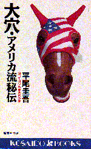

平尾 圭吾（ひらお けいご）
高松高校 昭和27年卒
2010年(H22)ご逝去
(Last updated:2010)
プロフィール
高松高校を昭和27年卒業。
慶応大学業後、大映に入社。
アメリカ大映総支配人を経て、作家活動に入る。
海外小説の翻訳を中心に、映画評論や競馬エッセイなどで活躍。
交友範囲も、映画関係者、作家、競馬関係者など幅広い。

競馬予想はほとんどプロである。座頭市シリーズが人気絶頂のころ、平尾さんが、アメリカに遊びに来た勝新太郎を競馬場に案内して、競馬を指南したことがあるそうである。
年3,4回アメリカ競馬旅行に出かけているが、旅行費用程度は稼いで帰ってくるそうである。
平成11年に「大穴・アメリカ流秘伝」(廣済堂出版)を出版して、そのノウハウを公開している。
著書・翻訳
「ニューヨーク遊遊記」(実業之日本社)
「おれたち優勝請負人」(講談社)
「気分はグッドアメリカン」(講談社)
「大穴・アメリカ流秘伝」(廣済堂出版)
「ジョーズ」(翻訳 早川書房)
「タワーリングインフェルノ」(翻訳 早川書房)
「愚者は死す」(早川書房)「one(ワン)」(翻訳 集英社)
他多数。
エピソード・１
アメリカ大映総支配人時代に、大映が倒産した。ABCテレビに再就職が決まったが、結局、日本に帰って仕事をすることにしたところ、帰国直前に、競馬で4000ドルの大穴を当てた。
当時、レートが1ドル300円くらいであったから、かなりの額になり、家族を連れて、カリブ海のバハマ諸島やマイアミを経由して、遊びながら帰り、海辺では、ジェームスボンドを真似て、「バカルディ。かき混ぜないで、シェークにしてくれ。」などとご機嫌で注文した。
さんざん遊んで、ロスから明日は帰国という日に、競馬新聞を読んで急に気が変わり、予約をキャンセルして、競馬場に行き、再び大穴を的中。
さらに、快適な旅行を続けた。
『大穴・アメリカ流秘伝』(廣済堂出版)より
それがきっかけとなったのか、その後も、年3,4回、アメリカ競馬旅行に出かける人生が20年以上続いているそうである。
エピソード・２
映画のセリフは、スラングはあるし、微妙な言葉のニュアンスの問題もある。映画の翻訳は、それを短い日本語にしないといけないため、かなり難しく、誤訳も結構ある。
戸田奈津子氏が、ある映画の中の重要なせりふで、映画のポイントがぼけてしまうような誤訳をしたそうである。
その映画を見た平尾さんが、戸田奈津子氏に、「戸田くん、あの訳はまずいよ。」と指摘し、その部分は平尾さんが言った字幕に訂正されたそうである。
（但し、又聞きなので、違っていれば、戸田さんごめんなさい。）